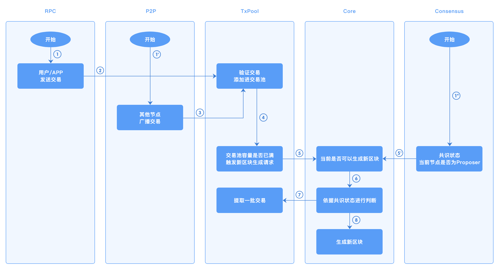

11. 交易缓存¶
11.1. 概述¶
区块链中，交易池模块负责缓存节点从网络中接收的待处理交易，在节点生成新的区块，从交易池获取交易并打包至区块内进行上链。
11.3. 模块设计¶
交易池采用模块化设计，使用接口将具体实现与其它模块进行解耦，以便后续迭代添加不同的实现。节点从网络接收到交易时，基于当前节点的状态，验证该交易的有效性（是否超时、是否已上链、是否已在交易池中等），仅当交易有效时，才会被添加至交易池中。
TxPool 接口描述
| 方法 | 解释 |
|---|---|
Start() error |
启动交易池模块 |
Stop() error |
停止交易池模块 |
AddTx(tx *common.Transaction, source TxSource) error |
添加交易至交易池 |
TxExists(tx *common.Transaction) bool |
查询交易是否存在 |
GetTxByTxId(txId string) (tx *common.Transaction, inBlockHeight int64) |
依据txId，查询交易信息 |
GetTxsByTxIds(txIds []string) <br>(txsRet map[string]*common.Transaction, txsHeightRet map[string]int64) |
批量查询交易信息 |
RetryAndRemoveTxs(retryTxs []*common.Transaction, removeTxs []*common.Transaction) |
在交易池中添加、删除传入的交易，详细解释见交易池状态变动 |
FetchTxBatch(blockHeight int64) []*common.Transaction |
获取交易池中缓存的部分待打包交易，并将这部分交易从普通队列移动至待删除队列 |
AddTxsToPendingCache(txs []*common.Transaction, blockHeight int64) |
当区块验证通过后，将块内交易添加至待删除队列，并从普通队列中删除 |
| 交易池类型 | 适用场景 |
|---|---|
| single交易池 | 所有的共识场景 |
| batch交易池 | 不适用于hotstuff共识场景 |
11.4. single 交易池实现¶
single交易池，对池内的状态更新是以单笔交易为基准的，如：添加交易、广播交易、从交易池fetch、删除交易等。
交易池内的队列分为两种：普通队列、待删除队列
普通队列：存储待打包的区块交易
待删除队列：存储已入块、待区块上链后删除的交易
添加至交易池的交易来源 TxSource，有三种类型：RPC、P2P、INTERNAL，不同来源的交易，对应不同的检查.
RPC：来自RPC的交易不验证基础的交易信息（如交易ID、时间戳是否符合规范）、不验证交易者的证书；因为RPC模块已做此类校验；成功添加至交易池的交易会广播给其它连接的节点
P2P：其它节点的广播的交易，进行所有的校验
INTERNAL：如果节点在同一高度接收到多个验证有效的区块，当其中某个区块上链后，其余的相同高度区块内的交易会被重新添加进交易池，防止这些交易被抛弃。
为兼容不同的共识算法，交易在交易池中会被记录更多信息，如区块高度信息，高度有三种状态；
-1：表示该交易池中不存在该交易0: 表示交易存在于交易池的待打包队列中>0: 表示交易存在于某个待提交的区块内，高度为该区块的高度
交易池的状态变动，主要有如下几种情况：
接收交易：将接收到验证通过后的交易，存储至待打包的队列中
生成区块：调用交易池的
FetchTxBatch实现，从交易池获取部分待打包交易，并将这些交易从普通队列移动至待删除队列验证区块：区块验证通过后，调用交易池的
AddTxsToPendingCache，将块内的交易从交易池的普通的队列移动至待删除队列，如果块内不在交易池的普通队列中，则直接添加至待删除队列中提交区块：调用交易池的
RetryAndRemoveTxs实现，先将同一高度其他区块的交易添加至交易池的普通队列中，同时这些交易如果存在于待删除队列，则将其从待删除移除；再将块内交易从交易池的所有队列中移除（普通队列、待删除队列）

11.5. batch交易池实现¶
batch交易池是交易池的另一种实现方式，池内状态的更新是以批次作为基准的；如：添加交易至队列、广播交易、从交易池获取等。
同时因为池内的状态更新是以批次为操作单位，来减少链上运行过程中交易池的时间消耗；所以无法支持 流水线的hotstuff共识，因为该共识需要对每笔交易添加额外的状态记录（即：交易所在的待提交区块高度信息，详细解释见上）
FetchTxBatch: 因不支持hotstuff，参数blockHeight无使用
GetTxByTxId: 因不支持hotstuff，返回的交易高度信息无意义
GetTxsByTxIds: 因不支持hotstuff，返回的交易高度信息无意义
AddTxsToPendingCache: 因不支持hotstuff，该方法无实现
添加至batch交易池的交易来源与single相同：RPC、P2P、INTERNAL，所做检查也相同，但在添加至交易池时有区别
RPC：来自RPC的单笔交易，在检查通过后先缓存在临时队列中，每隔一段时间，将该临时队列内的交易打包为批次，添加到交易池的普通队列内
P2P：因为batch交易池的P2P广播是以批次为单位，当其它节点接收到广播的批次交易时，将该批次内验证通过的交易作为一个新的批次加入至普通队列内
INTERNAL：将其它模块重新放回交易池的交易，作为一个新的批次添加至普通队列
11.6. 模块间交互¶
交易池主要与RPC、MsgBus、Core、BlockChainStore模块进行交互；
从
RPC模块接收客户端发送的交易从
MsgBus模块接收其它节点广播的交易BlockChainStore来验证交易是否已存在于链上节点生成、验证、提交区块时，
Core模块调用相应的接口，修改交易池的状态
流程图如下：
11.7. 参数配置¶
txpool 在节点配置中，有如下配置参数。
| 参数名称 | 类型 | 默认值 | 释义 |
|---|---|---|---|
| pool_type | string | Single | 启动的交易池类型，有single、batch两种类型 |
| max_txpool_size | Int | 5120 | 交易池储存普通交易的数量上限 |
| max_config_txpool_size | Int | 10 | 交易池储存配置交易的数量上限 |
| batch_max_size | int | 50000 | 批量交易池，每个批次最多包含的交易数量 |
| batch_create_timeout | int | 1000 微秒 | 批量交易池，定时创建批次的时间间隔 |